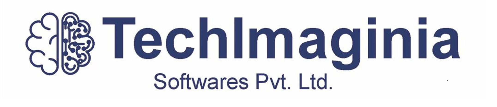

<mat-sidenav-container class="sidenav-container">
  <mat-sidenav #drawer class="sidenav" fixedInViewport
      [attr.role]="(isHandset$ | async) ? 'dialog' : 'navigation'"
      [mode]="(isHandset$ | async) ? 'over' : 'side'"
      [opened]="(isHandset$ | async) === false">
    <mat-toolbar color="primary">
      
    </mat-toolbar>
    <mat-nav-list>
      <a mat-list-item [routerLink]="['/']" (click)="handleDrawerClick(drawer)" routerLinkActive="active-route" [routerLinkActiveOptions]="{exact: true}">home</a>
      <a mat-list-item [routerLink]="['products']" (click)="handleDrawerClick(drawer)" routerLinkActive="active-route">products</a>
      <a mat-list-item [routerLink]="['about']" (click)="handleDrawerClick(drawer)" routerLinkActive="active-route">about</a>
      <a mat-list-item [routerLink]="['contactUs']" (click)="handleDrawerClick(drawer)" routerLinkActive="active-route">ContactUs</a>
    </mat-nav-list>
    <mat-toolbar class="footer" color="primary">
     &copy; {{currentYear}} Techlmaginia
    </mat-toolbar>
  </mat-sidenav>
  <mat-sidenav-content>
    <mat-toolbar class="main" color="primary">
      <button
        type="button"
        aria-label="Toggle sidenav"
        mat-icon-button
        (click)="drawer.toggle()"
        *ngIf="isHandset$ | async">
        <mat-icon aria-label="Side nav toggle icon" >menu</mat-icon>
      </button>
      <span *ngIf="isHandset$ | async" style="height:25px; margin-left: 8px;">
        
      </span>
    </mat-toolbar>
  
    <div class="app-frame">
      <div mat-button class="btnn" style="height:30px;  width:100%; background-color:  black;">

         
        <button class="btn" type="button" style="height: 30px" 
     (click)="openDialog()" 
        >SignIn</button>
    
        </div>
        
      <router-outlet></router-outlet>
    </div>
  </mat-sidenav-content>
</mat-sidenav-container>


